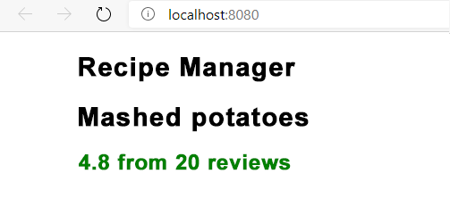

O componente props não é limitado a cadeias de caracteres, mas pode usar objetos JavaScript. Você pode usar isso para criar componentes mais robustos.
Você deseja atualizar RecipeTitle para exibir os comentários da receita. Se a classificação média for igual ou inferior a 3,5, você exibirá a classificação como vermelho. Se for maior que 3,5, você exibirá a classificação como verde. Use o operador ternário e as classes CSS para ajudar a gerenciar a exibição.
Ao importar o CSS para um componente individual, você pode evitar conflitos de nomes e outros problemas que geralmente surgem com o CSS. Aqui, comece criando um arquivo .css para RecipeTitle.
css
.red {
color: red;
}
.green {
color: green;
}
Agora, atualize RecipeTitle para importar o CSS e exibir os valores.
JavaScript
import './RecipeTitle.css';
jsx
<h3 className={ props.feedback.rating <=3.5 ? 'red' : 'green' }>
{ props.feedback.rating } from { props.feedback.reviews } reviews
</h3>
Você começou importando o arquivo CSS criado. Adicionou um novo elemento h3 para exibir o feedback. Usou o operador ternário para definir a classe com base em rating.
Todo o conteúdo de ReactTitle.jsx agora deve ser:
jsx
import './RecipeTitle.css';
import React from 'react';
// TODO: Create RecipeTitle component
function RecipeTitle(props) {
return (
<section>
<h2>{ props.title }</h2>
<h3 className={ props.feedback.rating <=3.5 ? 'red' : 'green' }>
{ props.feedback.rating } from { props.feedback.reviews } reviews
</h3>
</section>
)
};
export default RecipeTitle;
Atualize RecipeTitle para definir o atributo feedback.
jsx
<RecipeTitle title={ recipe.title } feedback={ recipe.feedback } />
Salve todos os arquivos. O navegador deve ser atualizado automaticamente com a exibição atualizada.
